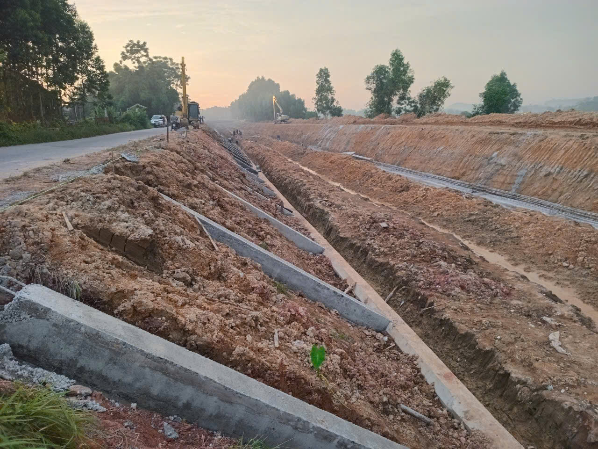
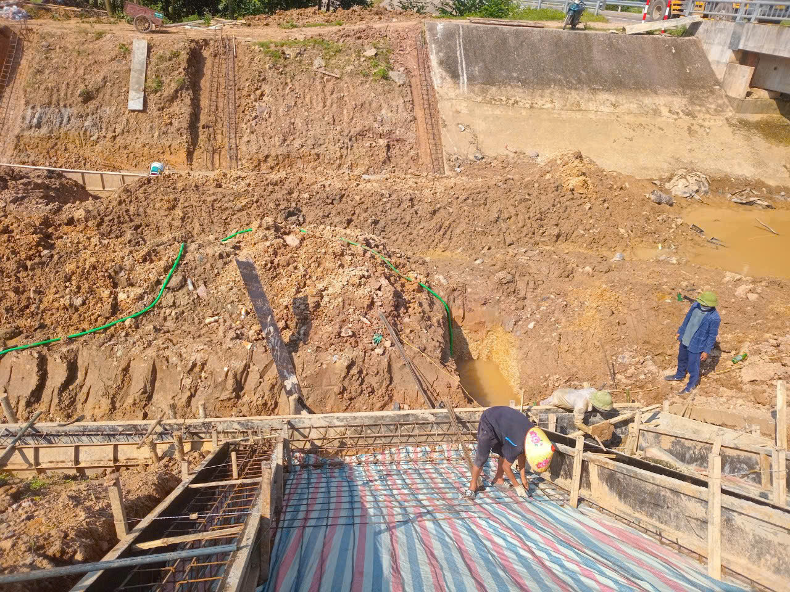
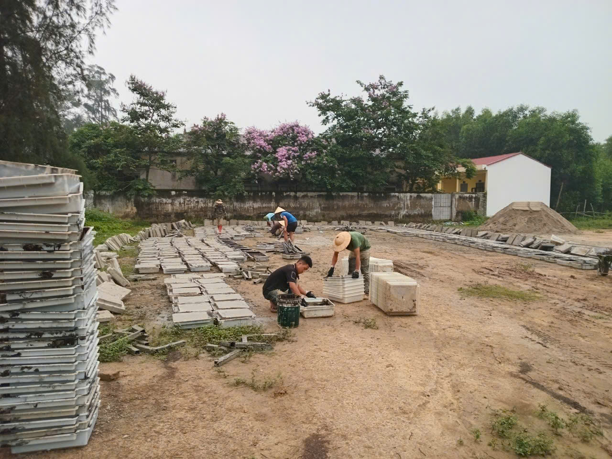
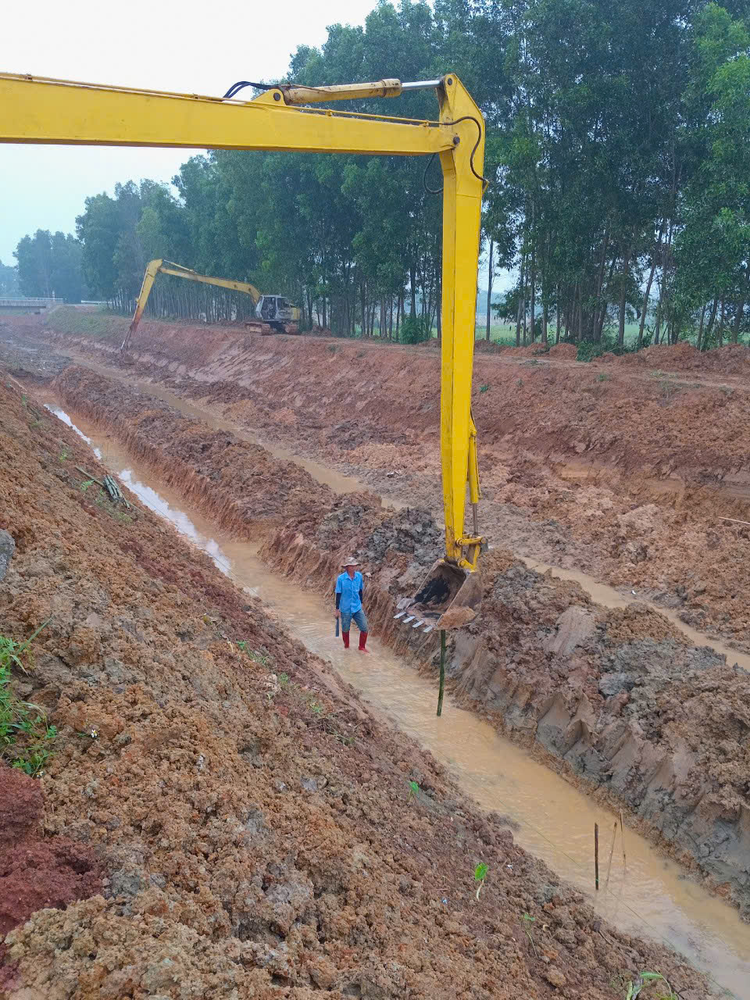
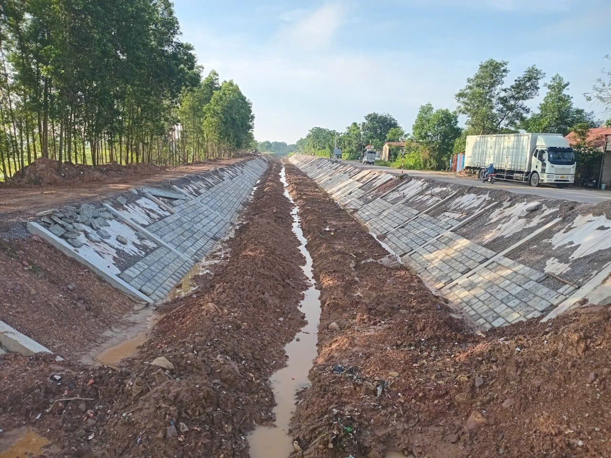

HỒ SƠ VĂN BẢN PHÁP LÝ & HỢP ĐỒNG KINH TẾ DỰ ÁN THỦY LỢI tiêu biểu
Dưới đây là thông tin trích lục từ hợp đồng kinh tế chính thức khẳng định năng lực thi công hạ tầng thủy lợi quy mô lớn của Công ty Cổ phần Thành Đạt:
Ngày ký kết văn bản: Ngày 01 tháng 04 năm 2025 tại Hiệp Hòa.
Tên gói thầu thực hiện: Gói thầu số 12: Thi công xây dựng và lắp đặt thiết bị.
Thuộc dự án lớn: Sửa chữa, nâng cấp Hệ thống thủy lợi Thác Huống, tỉnh Bắc Giang - Thái Nguyên.
Các bên tham gia thực hiện hợp đồng:
Giá trị công việc và cam kết:
Tiêu chuẩn kỹ thuật đạt được: Công trình được áp dụng giám sát thi công nghiêm ngặt theo các tiêu chuẩn kỹ thuật xây dựng thủy lợi quốc gia, đảm bảo tiến độ và cam kết an toàn vận hành dài hạn.
Nhật ký hình ảnh ghi nhận công tác đào đắp, gia cố mái kênh và đổ bê tông kết cấu thuộc hệ thống thủy lợi Thác Huống:

Công tác đào móng và định hình bờ mái taluy tuyến kênh

Gia công lắp đặt lưới thép chuẩn bị đổ bê tông bản đáy

Khu vực đúc và bảo dưỡng các cấu kiện bê tông tấm lát tấm mái

Thiết bị cơ giới nạo vét và hạ cao độ lòng kênh dẫn dòng

Lắp đặt tấm lát bê tông gia cố chống sạt lở hai bên bờ kè